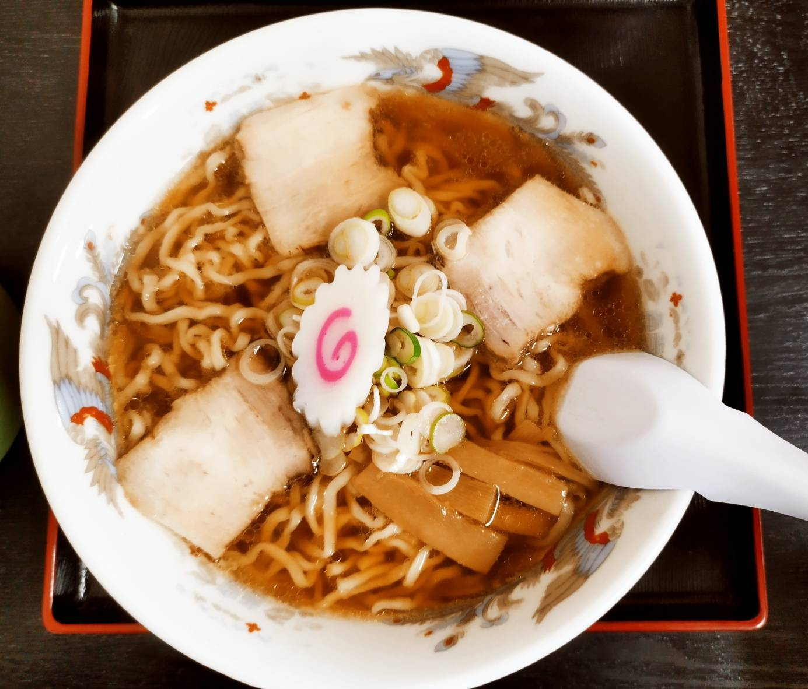

かつ一
駅前付近のお店。
ソース豚カツが有名。
実際かなり美味しかった。
古川農園
国道49号線沿いに位置。
麺のもちもち感とスープがいい味を出していてとても美味しい一杯だった。
ラーメン二郎
駅前付近のお店。
会津大生といえばというイメージがある、一口目はとても美味しいため1回は行ってほしい場所。
ニョッキニョッキ
会津大の目の前にあるイタリアンのお店。値段も思ったよりもリーズナブルな上とても美味しかった。デートスポットにいいかも。
とん八
会津若松駅から徒歩20分。
カツがボリュームがあり衣がサクサクでとても美味しかった。ご飯おかわり無料なのも大きい。
なかじま
鶴ヶ城付近のお店。煮込みソースカツ丼が有名で、唯一無二なおいしさがここにある。会津大生はアカスキで1度は見たことがあるのではないだろうか。
こうみ家
駅から少し短大方面に歩いていくとある。豚骨ラーメンがとても美味しく、さらに見栄えが良くて見てて気持ちいい。

よどや
短大の近くのお店。これぞ喜多方ラーメンという感じの喜多方ラーメンが食べれる。麺とスープのバランスが心地よい。
来夢
駅前付近のお店。食べ応えのある中太ちぢれ麺ととろけるチャーシューの組み合わせが◎。とても美味しかった。
みなさん亭
会津大を出て中央病院方面に行くと着く。本当に辛いラーメンが食べれるため、辛いのが好きな人に特におすすめ。普通のラーメンも美味しい。